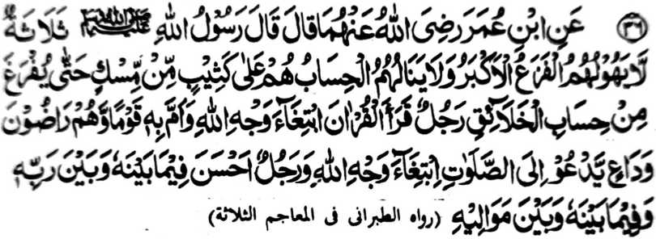

Hadith - 36

Miyakathitayan ko Ibn-e-‘Umar (Radhiallaho Anhoma) a pitharo iyan a pitharo Rasulollah (Sallallaho Alaihi Wasallam), “Telo a manga tao a di den zagaden o Kalek a lebi a Mala [ko Gawi-i a Qiyamat], ago di siran zomariya-an, a siran na si-i siran kakaden ko manga darepa a manga-a mot a di so kastori taman sa kapasad o kapezomariya-a ko manga ka-aden: [Paganay ron] so Mama a biyatiya [piyaganad] iyan so Qur’an sa kasoso-at o Allah sa pephagimaman niyan so manga tao a siran na masoso-at siran non, [ika dowa] go so gi-i manolon a ipephan olon niyan so Sambayang a so-aso-at iyan ko Allah, [ika telo] go so mama a mapiya-i kapakindolona ko maporo iyan ago so kababa-an niyan. ”
So kasopi-it, so kalek, ago so sawan go so manga ringasa ko Gawi-i a Qiyamat na tanto a mala sa da a titho a Muslim a ba niyan kalilipati o di na ba niyan di ma-i inengka. So kapakalidas sangkanan a boko a nggolalan ko apiya antona-a okit, sangkoto a Gawi-i a Qiyamah, na limo a kalelebiyan niyan so phipira nggibo a manga pipiya ago nggibo-nggibo a kapipiya ginawa. So siran a phakadekha-an ago phakapiya-an a ginawa niyan [o Allah] tanto den a miyamagontong. So tanto a kabinasa-an ago kalapis na bagi-an o siran a da-a sabot iyan a tatarima-an niran a so kabatiya-a ko Qur'an na da-a kipantag iyan ago ilang a masa.
Si-i ko [kitab a] a ‘Mu'jam Kabir’ na misosoraton angka-iya a Hadith a so kiyathitayanan niyan, a so Hadrat Abdullah ibn-e-‘Umar (Radhiallaho ‘Anhoma), a Sahabi o Rasulollah (Sallallaho ‘Alaihi Wasallam) na pitharo iyan, "O da ko maneg angka-iya a Hadith oman-oman (miyaka-pito niyan makasoy), na diyaken den panotholen.”